4.0Cách chọn loại & đọc chương này
Mở thư viện: trong Explore, ở STEP 1 · Chart Type bấm Change → chọn một trong 6 tab nhóm. Mỗi mục dưới đây ghi 3 thông tin: Dùng khi nào · Role cần · Tuỳ chọn.
Chọn theo câu hỏi nghiệp vụ: chỉ số đơn/bảng → Essentials; so sánh giữa hạng mục → Comparison; xu hướng theo thời gian → Trend; tỷ trọng/cơ cấu → Composition; tương quan & quan hệ → Relationship; theo địa lý → Geo.
Cách đọc: mỗi nhóm có (1) ảnh thư viện liệt kê các loại, (2) ảnh ví dụ chart thật, và (3) ảnh SETUP — tức là mở chính chart đó trong Explore để thấy field nào vào role nào. Role bắt buộc có dấu *. Các loại cùng một kiểu role thì setup như nhau (được ghi chú trong từng ảnh).
Nhóm 1Essentials (6) — chỉ số & bảng nền tảng
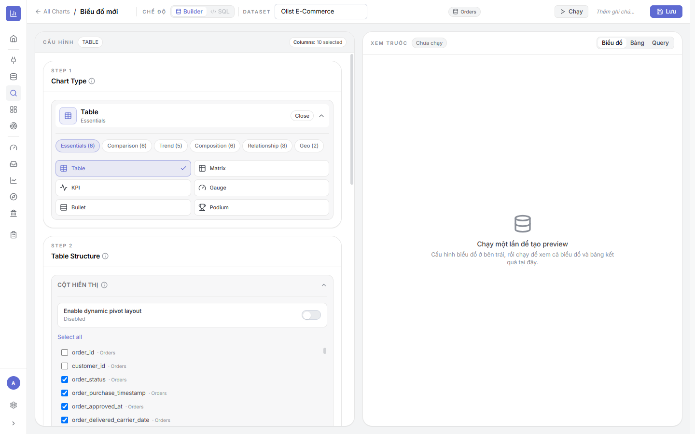
- Table (Bảng) — Dùng khi nào: xem/đối chiếu số liệu chi tiết, nhiều cột. Role: chọn cột hiển thị (nhiều); bật pivot với row dim × column dim × measure. Tuỳ chọn: dynamic pivot, ẩn/hiện cột, định dạng từng ô, giới hạn dòng.
- Matrix (Ma trận) — Dùng khi nào: bảng chéo 2 chiều (hàng × cột) với giá trị ở ô giao. Role: row dimension × column dimension × measure. Tuỳ chọn: tổng theo hàng/cột, định dạng số.
- KPI (Thẻ chỉ số) — Dùng khi nào: nêu bật một con số quan trọng (GMV, số đơn…). Role: 1 metric, không cần dimension. Tuỳ chọn: icon, viền/nền gradient, benchmark & delta (so kỳ trước), color rule đổi màu theo ngưỡng.
- Gauge (Đồng hồ) — Dùng khi nào: đo một chỉ số so với min–max / mục tiêu (ví dụ % giao đúng hẹn). Role: 1 metric. Tuỳ chọn: min/max, ngưỡng màu (đỏ/vàng/xanh).
- Bullet — Dùng khi nào: KPI dạng thanh so với target & các dải ngưỡng (gọn hơn Gauge). Role: 1 metric (+ target). Tuỳ chọn: dải ngưỡng, target line.
- Podium (Bục xếp hạng) — Dùng khi nào: khoe Top-N kiểu huy chương (quán quân/á quân/hạng 3). Role: dimension + metric. Tuỳ chọn: số hạng hiển thị, style huy chương.
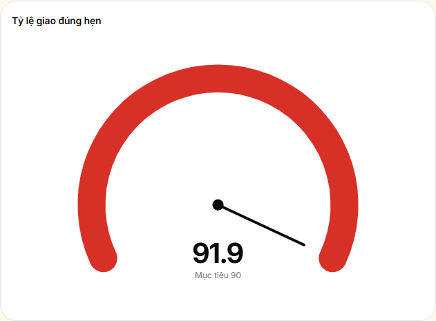
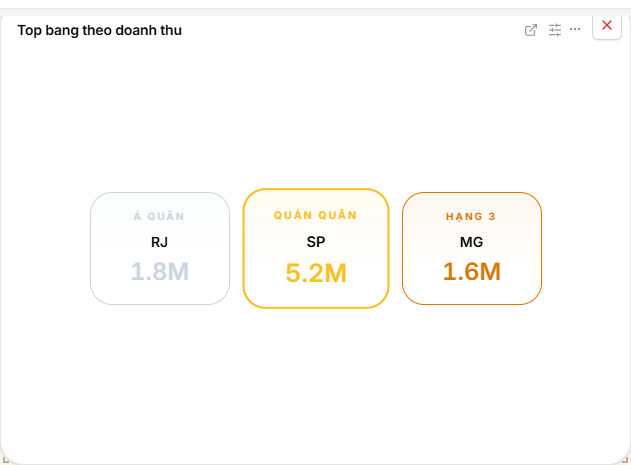
⚙ Cách setup (mở chart trong Explore)
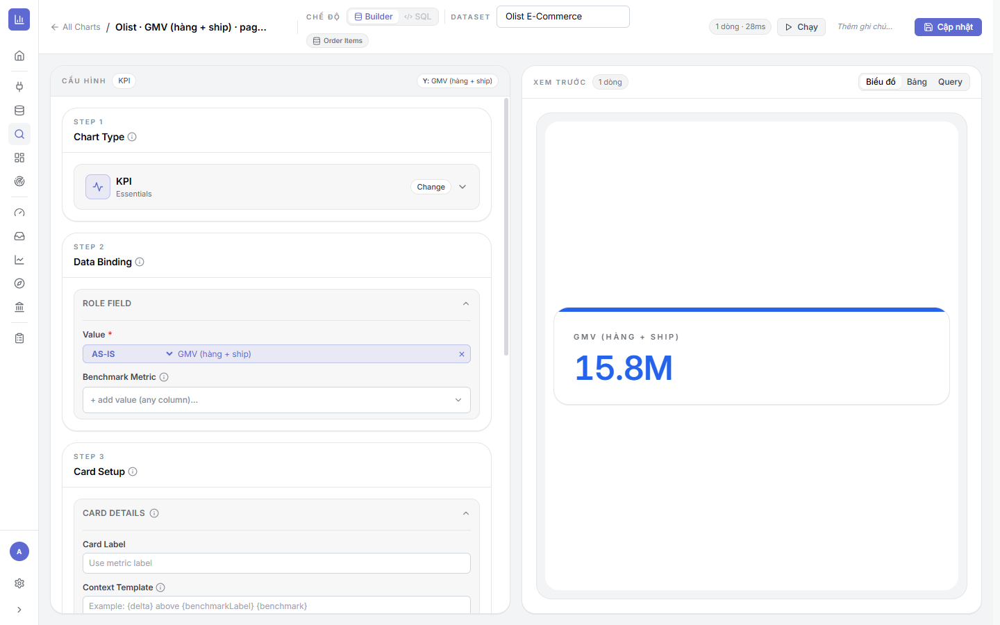
{delta} above {benchmarkLabel}) để hiện chênh lệch. Gauge/Bullet setup tương tự — 1 metric + ngưỡng/target.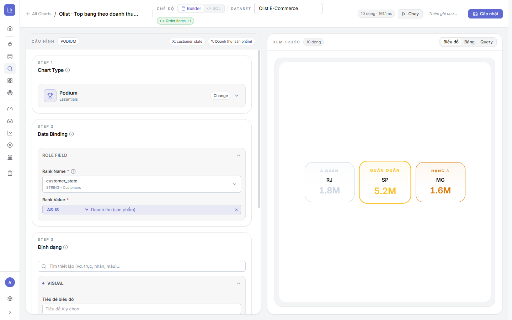
Nhóm 2Comparison (6) — so sánh giữa hạng mục
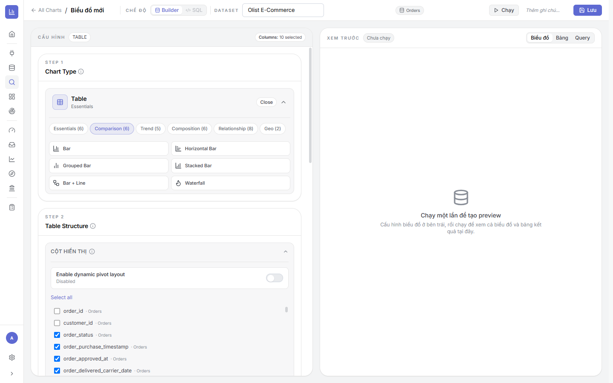
- Bar (Cột dọc) — Dùng khi nào: so sánh giá trị giữa các hạng mục. Role: X (dimension) + Values (1+ metric). Tuỳ chọn: độ rộng cột, data labels, bo góc.
- Horizontal Bar (Cột ngang) — Dùng khi nào: nhãn dài hoặc xếp hạng nhiều mục (dễ đọc từ trên xuống). Role: giống Bar.
- Grouped Bar (Cột nhóm) — Dùng khi nào: so sánh nhiều chuỗi cạnh nhau theo từng hạng mục. Role: X + breakdown + metric.
- Stacked Bar (Cột chồng) — Dùng khi nào: vừa xem tổng vừa xem cơ cấu bên trong. Role: X + breakdown + metric. Tuỳ chọn: 100% stacked (tỷ trọng), nhãn theo segment hoặc total.
- Bar + Line (Combo) — Dùng khi nào: hai đơn vị khác nhau trên cùng khung (ví dụ doanh thu cột + tỷ lệ đường). Role: X + metrics (cột) + lineMetric (đường). Tuỳ chọn: trục Y phụ bên phải.
- Waterfall (Thác nước) — Dùng khi nào: phân rã một tổng thành các phần cộng dồn tăng/giảm (đóng góp theo hạng mục). Role: dimension + metric.
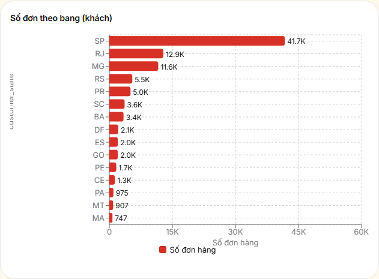
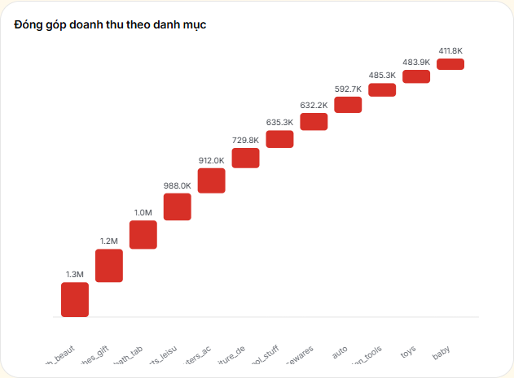

⚙ Cách setup (mở chart trong Explore)
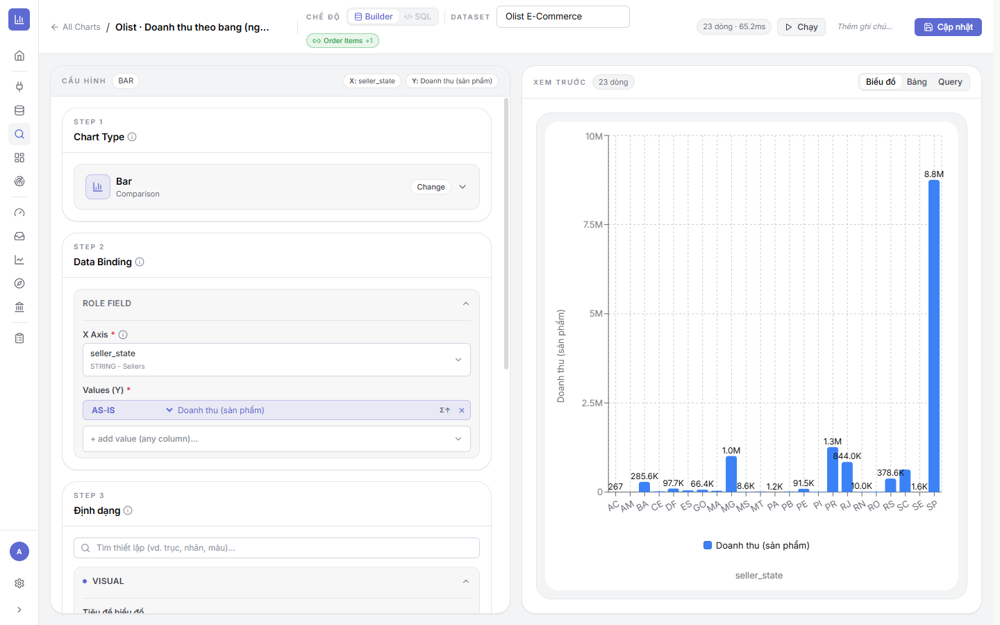
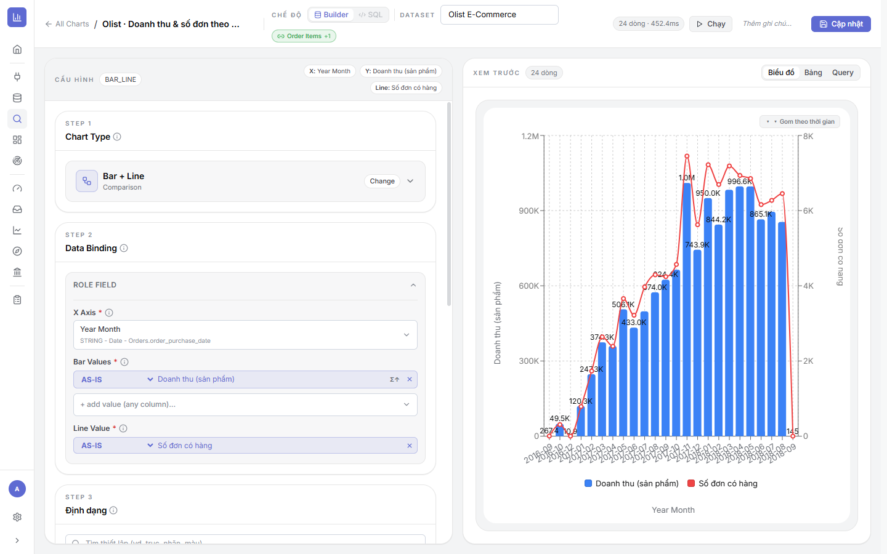
Nhóm 3Trend (5) — xu hướng theo thời gian
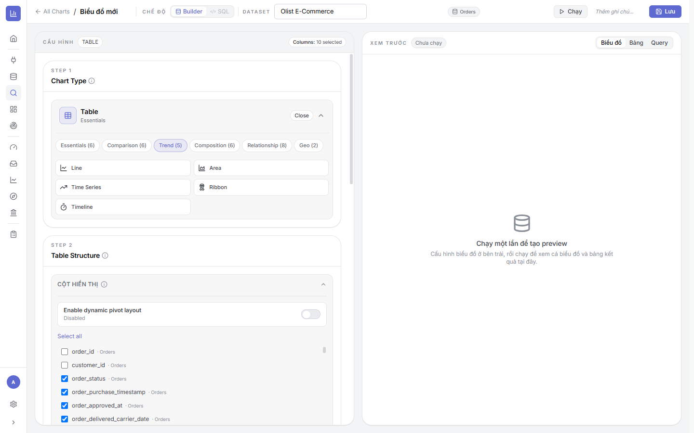
- Line (Đường) — Dùng khi nào: xu hướng liên tục theo thời gian/thứ tự. Role: X (thường là time) + metrics; thêm breakdown để có nhiều đường. Tuỳ chọn: độ dày nét, điểm mốc.
- Area (Vùng) — Dùng khi nào: nhấn mạnh độ lớn tích luỹ của xu hướng. Role: giống Line. Tuỳ chọn: độ mờ nền (fill opacity), area chồng.
- Time Series (Chuỗi thời gian) — Dùng khi nào: phân tích thời gian chuyên biệt, cần gom theo ngày/tuần/tháng/quý. Role: timeField + metrics. Tuỳ chọn: mức gom thời gian (nút “Gom theo thời gian”), rolling.
- Ribbon (Dải xếp hạng) — Dùng khi nào: theo dõi thứ hạng thay đổi của các hạng mục qua thời gian. Role: time + dimension + metric.
- Timeline (Dòng thời gian) — Dùng khi nào: trình bày các mốc/sự kiện theo thời gian. Role: time + nhãn sự kiện.
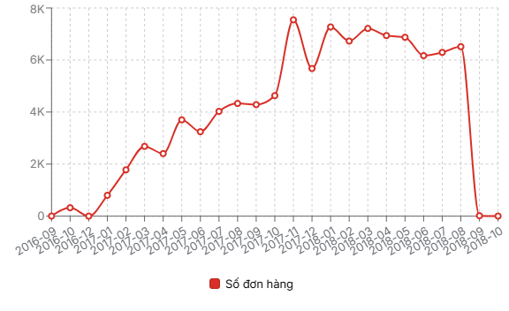
⚙ Cách setup (mở chart trong Explore)
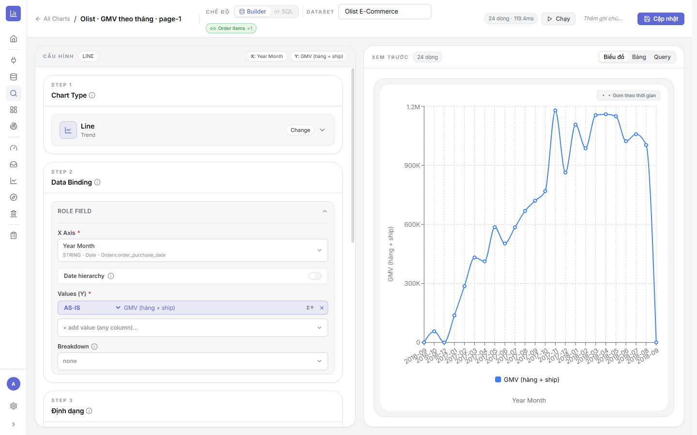
Year Month từ order_purchase_date) + bật Date hierarchy để drill theo năm/quý/tháng; Values (Y) = metric; Breakdown để tách nhiều đường. Area/Time Series/Ribbon setup tương tự.Nhóm 4Composition (6) — cơ cấu & tỷ trọng
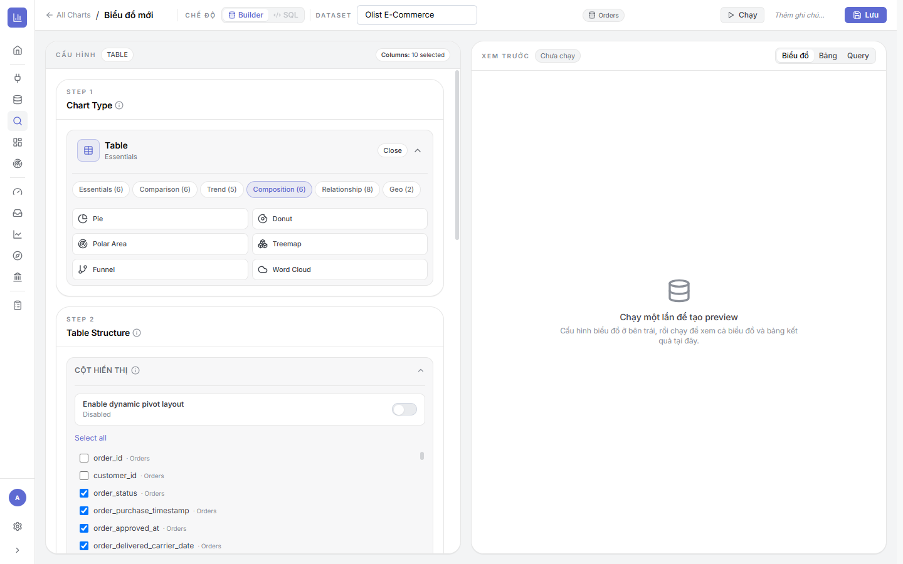
- Pie (Tròn) — Dùng khi nào: tỷ trọng vài phần trong tổng (ít hạng mục). Role: dimension + 1 metric.
- Donut (Vành khuyên) — Dùng khi nào: như Pie nhưng thoáng hơn, tâm để chú thích. Role: dimension + 1 metric. Tuỳ chọn: bán kính trong (độ rỗng).
- Polar Area (Quạt cực) — Dùng khi nào: so tỷ trọng khi các phần khá đều, nhấn bằng bán kính. Role: dimension + 1 metric.
- Treemap (Ô lồng) — Dùng khi nào: tỷ trọng của nhiều hạng mục (hoặc phân cấp) trong một khung. Role: dimension (+ phân cấp) + metric (diện tích ô).
- Funnel (Phễu) — Dùng khi nào: tỷ lệ chuyển đổi qua các bước (đơn: tạo → thanh toán → giao). Role: dimension (bước) + metric. Tuỳ chọn: % rớt giữa các bước.
- Word Cloud (Đám mây từ) — Dùng khi nào: tần suất/độ quan trọng của từ khoá, nhãn. Role: dimension (từ) + metric (cỡ chữ).
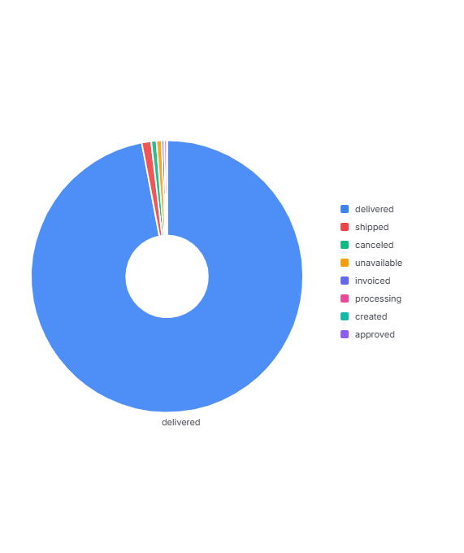
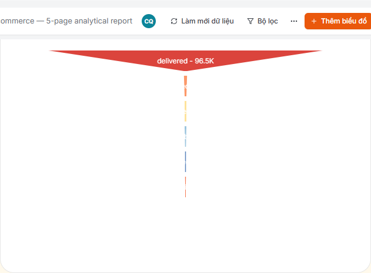
⚙ Cách setup (mở chart trong Explore)
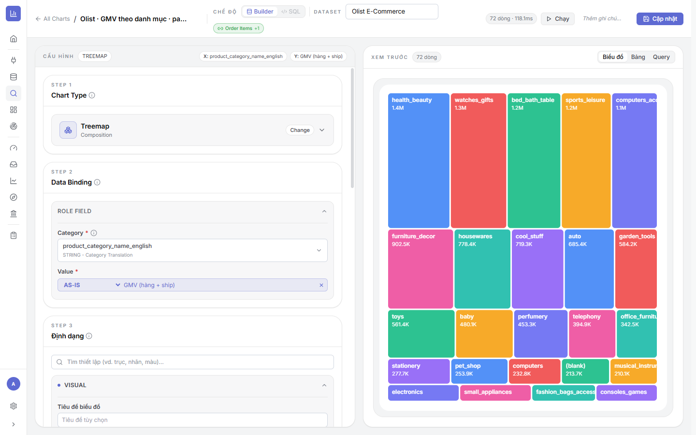
product_category_name) + Value (metric = diện tích ô). Đây cũng là cách setup chung của Pie/Donut/Polar Area/Sunburst.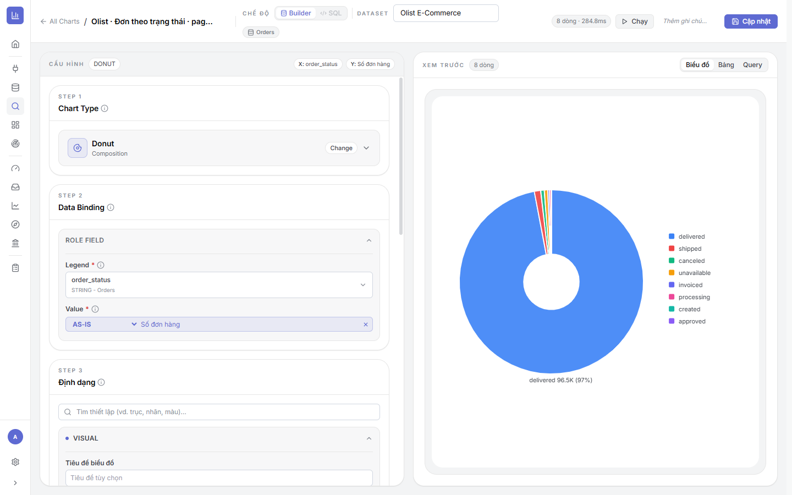
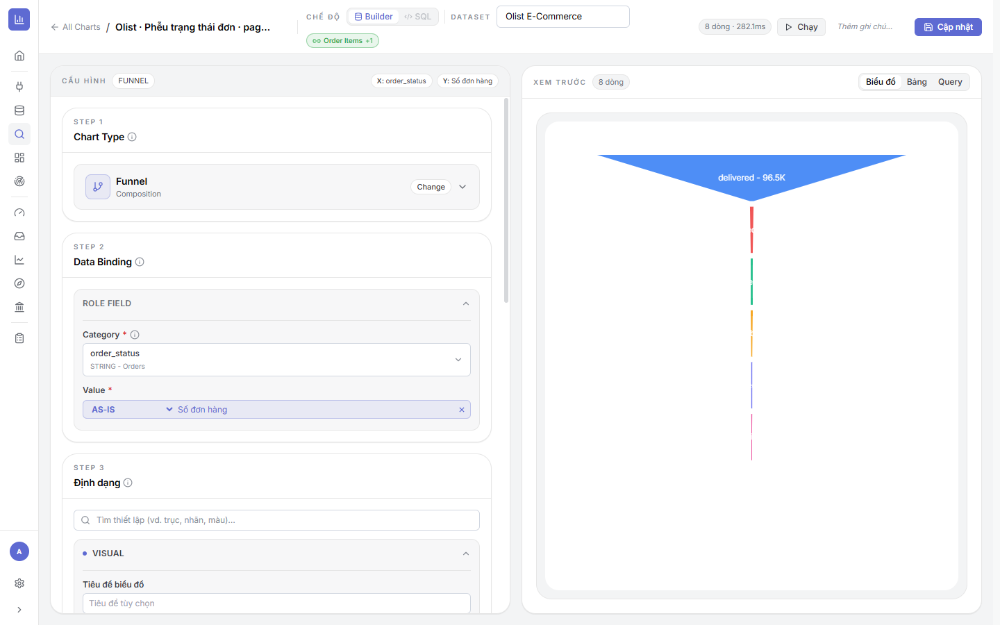
Nhóm 5Relationship (8) — tương quan, phân bố & quan hệ
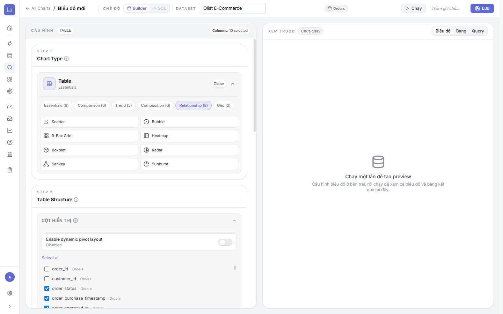
- Scatter (Phân tán) — Dùng khi nào: tương quan giữa 2 biến số. Role: scatterX + scatterY (+ nhãn điểm). Tuỳ chọn: đường xu hướng, nhãn.
- Bubble (Bong bóng) — Dùng khi nào: như Scatter nhưng thêm chiều thứ 3 bằng kích thước bong bóng. Role: scatterX + scatterY + size (+ màu).
- 9-Box Grid — Dùng khi nào: xếp đối tượng vào ma trận 3×3 theo 2 tiêu chí (ví dụ tiềm năng × hiệu suất). Role: 2 trục phân loại + đối tượng.
- Heatmap (Bản đồ nhiệt) — Dùng khi nào: mật độ/giá trị theo 2 chiều (ví dụ giờ × thứ). Role: 2 dimension + measure (màu ô).
- Boxplot (Hộp phân bố) — Dùng khi nào: xem phân bố (min/Q1/trung vị/Q3/max, ngoại lệ). Role: dimension + giá trị thô.
- Radar (Mạng nhện) — Dùng khi nào: so nhiều chỉ tiêu của một/vài đối tượng trên các trục toả tròn. Role: dimension + nhiều metrics.
- Sankey (Dòng chảy) — Dùng khi nào: luồng chuyển từ nguồn → đích (ví dụ kênh → trạng thái). Role: source + target + value (độ dày luồng).
- Sunburst (Vòng phân cấp) — Dùng khi nào: cơ cấu phân cấp nhiều tầng dạng vòng đồng tâm. Role: nhiều dimension (tầng) + metric.
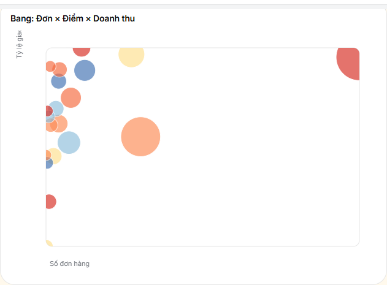
⚙ Cách setup (mở chart trong Explore)
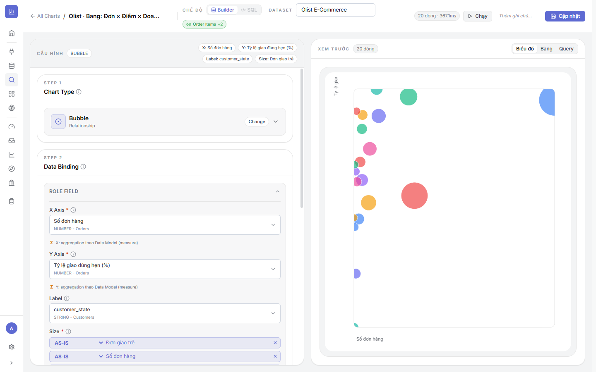
customer_state) + Size (metric = kích thước bong bóng). Scatter giống nhưng không bắt buộc Size; 9-Box dùng 2 trục phân loại.Nhóm 6Geo (2) — theo địa lý
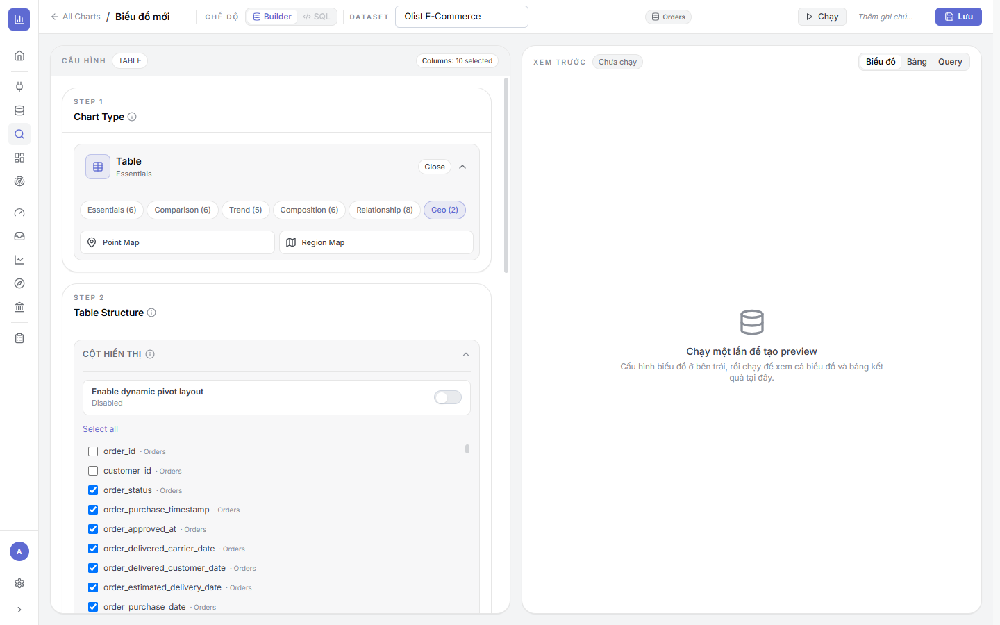
- Point Map (Bản đồ điểm) — Dùng khi nào: chấm từng vị trí theo toạ độ (khách/cửa hàng). Role: lat + lng (+ size/màu theo metric). Tuỳ chọn: nền bản đồ (OpenStreetMap/CARTO), cụm điểm.
- Region Map / Choropleth (Bản đồ vùng) — Dùng khi nào: tô màu vùng (tỉnh/bang) theo giá trị. Role: mã vùng + measure (thang màu). Tuỳ chọn: thang màu, chú giải.
Điều kiện dữ liệu: Point Map cần cột vĩ độ/kinh độ; Region Map cần mã vùng chuẩn khớp bản đồ. Trong ds111, bảng Geo Dim cấp toạ độ theo
zip_code_prefix (đã nối ở Chương 2).4.7Chọn nhanh & Checklist
Bảng chọn nhanh theo câu hỏi:
- “Một con số quan trọng?” → KPI · so mục tiêu → Gauge/Bullet · top hạng → Podium.
- “So sánh giữa hạng mục?” → Bar/Horizontal Bar · nhiều chuỗi → Grouped/Stacked · phân rã tổng → Waterfall.
- “Thay đổi theo thời gian?” → Line/Area/Time Series.
- “Cơ cấu/tỷ trọng?” → Pie/Donut (ít mục) · Treemap (nhiều mục) · Funnel (chuyển đổi).
- “Tương quan/quan hệ?” → Scatter/Bubble · 2 chiều mật độ → Heatmap · luồng → Sankey · phân bố → Boxplot · nhiều tiêu chí → Radar.
- “Theo địa lý?” → Point Map (điểm) · Region Map (vùng).
Checklist: ✅ chọn loại khớp câu hỏi; ✅ gán đủ role bắt buộc (*) theo loại; ✅ dữ liệu hợp loại (Scatter cần 2 số; Map cần toạ độ/mã vùng; Heatmap cần 2 chiều); ✅ đối chiếu Bảng/SQL ở Chương 3 trước khi lưu.
Lỗi hay gặp: ① dùng Pie khi có quá nhiều hạng mục (rối) → chuyển Treemap/Bar; ② Scatter/Bubble gán nhầm dimension vào trục số; ③ Map thiếu toạ độ/mã vùng → không vẽ được; ④ Stacked mà không bật 100% khi cần xem tỷ trọng.
➡️ Tiếp theo: Chương 5 · Dashboard — đưa các chart đã lưu lên báo cáo, sắp layout và thêm bộ lọc.
🔗 Liên quan